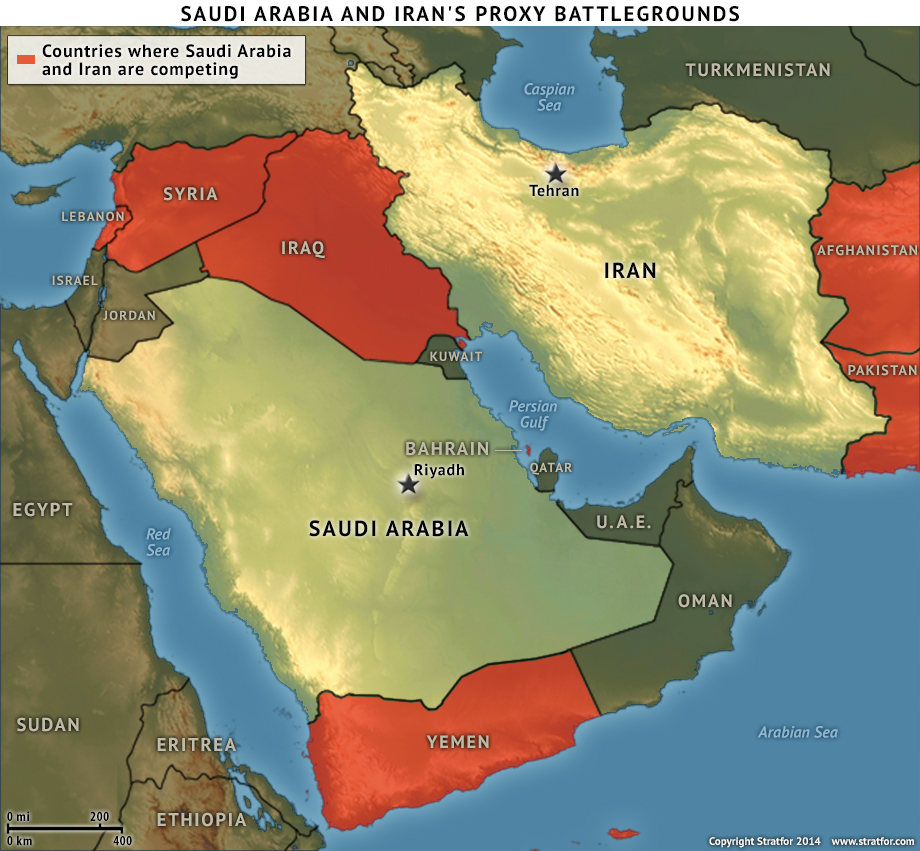

A realist view of the regional power balance
Rojava Revolution: Kurds taking advantage of power vacuum.
 The front seat of a cable car affords a great view of the city
The front seat of a cable car affords a great view of the city
Why is the US involved?
 The front seat of a cable car affords a great view of the city
The front seat of a cable car affords a great view of the city
Russia protecting interests and pushing it's influence
 Tartus Naval Base and Russia's port in the Mediterranean
Tartus Naval Base and Russia's port in the Mediterranean
Iran at odds with Saudi Arabia

Tartus Naval Base and Russia's port in the Mediterranean